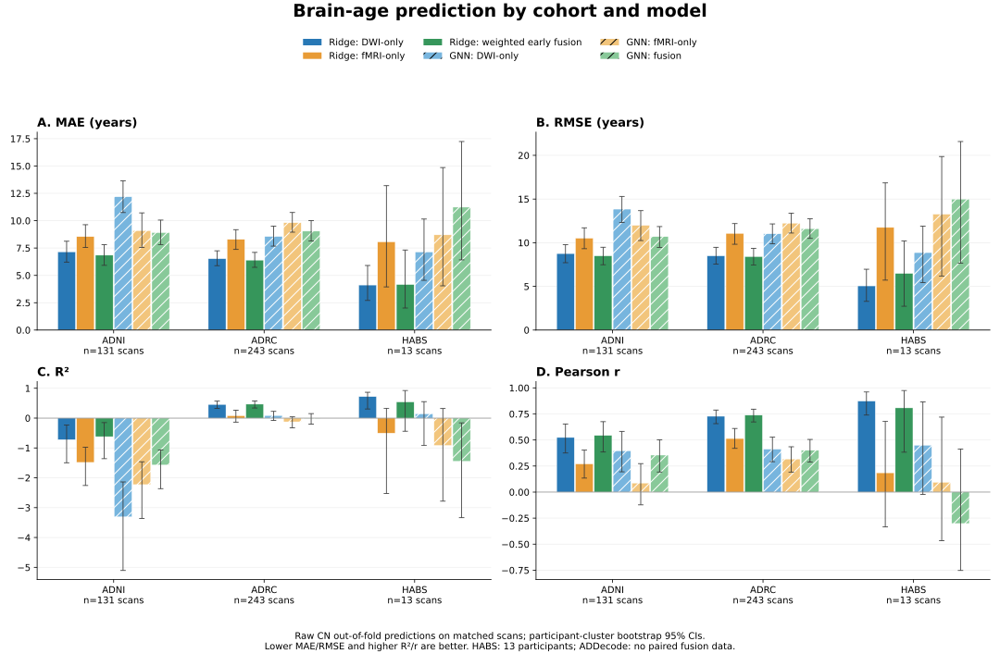

Brain-age prediction performance
Raw CN OOF predictions; common paired benchmark. Ridge fusion means weighted early fusion. Additional fusion variants appear in the CSV.

ADNI
| Model | Scans / participants | MAE [95% CI] | RMSE [95% CI] | R² [95% CI] | Pearson r [95% CI] |
|---|
| Ridge: DWI-only | 131 / 74 | 7.15 [6.21, 8.12] | 8.75 [7.71, 9.77] | -0.721 [-1.496, -0.228] | 0.524 [0.375, 0.654] |
| Ridge: fMRI-only | 131 / 74 | 8.55 [7.54, 9.63] | 10.52 [9.31, 11.71] | -1.485 [-2.257, -0.978] | 0.270 [0.134, 0.402] |
| Ridge: Fusion (weighted early) | 131 / 74 | 6.85 [5.92, 7.80] | 8.50 [7.48, 9.48] | -0.622 [-1.358, -0.150] | 0.544 [0.385, 0.676] |
| GNN: DWI-only | 131 / 74 | 12.19 [10.74, 13.65] | 13.85 [12.32, 15.30] | -3.308 [-5.105, -2.138] | 0.396 [0.194, 0.583] |
| GNN: fMRI-only | 131 / 74 | 9.09 [7.56, 10.72] | 11.99 [10.25, 13.67] | -2.229 [-3.359, -1.462] | 0.087 [-0.123, 0.273] |
| GNN: Fusion | 131 / 74 | 8.91 [7.81, 10.06] | 10.70 [9.46, 11.85] | -1.572 [-2.362, -1.071] | 0.355 [0.193, 0.502] |
ADRC
| Model | Scans / participants | MAE [95% CI] | RMSE [95% CI] | R² [95% CI] | Pearson r [95% CI] |
|---|
| Ridge: DWI-only | 243 / 243 | 6.52 [5.89, 7.25] | 8.50 [7.54, 9.48] | 0.457 [0.324, 0.568] | 0.728 [0.657, 0.788] |
| Ridge: fMRI-only | 243 / 243 | 8.29 [7.37, 9.18] | 11.07 [9.82, 12.18] | 0.079 [-0.133, 0.267] | 0.514 [0.419, 0.610] |
| Ridge: Fusion (weighted early) | 243 / 243 | 6.39 [5.74, 7.10] | 8.41 [7.44, 9.36] | 0.468 [0.339, 0.576] | 0.738 [0.673, 0.796] |
| GNN: DWI-only | 243 / 243 | 8.55 [7.67, 9.50] | 11.02 [9.89, 12.15] | 0.087 [-0.075, 0.226] | 0.412 [0.291, 0.527] |
| GNN: fMRI-only | 243 / 243 | 9.82 [8.95, 10.75] | 12.23 [11.11, 13.38] | -0.125 [-0.324, 0.042] | 0.317 [0.192, 0.435] |
| GNN: Fusion | 243 / 243 | 9.04 [8.15, 10.01] | 11.61 [10.49, 12.74] | -0.013 [-0.204, 0.150] | 0.401 [0.288, 0.505] |
HABS
| Model | Scans / participants | MAE [95% CI] | RMSE [95% CI] | R² [95% CI] | Pearson r [95% CI] |
|---|
| Ridge: DWI-only | 13 / 13 | 4.12 [2.71, 5.91] | 5.06 [3.28, 6.97] | 0.722 [0.306, 0.866] | 0.873 [0.739, 0.961] |
| Ridge: fMRI-only | 13 / 13 | 8.06 [3.95, 13.20] | 11.75 [5.71, 16.85] | -0.504 [-2.524, 0.330] | 0.185 [-0.335, 0.678] |
| Ridge: Fusion (weighted early) | 13 / 13 | 4.16 [2.02, 7.32] | 6.48 [2.72, 10.19] | 0.542 [-0.440, 0.925] | 0.808 [0.383, 0.975] |
| GNN: DWI-only | 13 / 13 | 7.14 [4.55, 10.15] | 8.87 [5.44, 11.88] | 0.143 [-0.916, 0.552] | 0.449 [-0.022, 0.865] |
| GNN: fMRI-only | 13 / 13 | 8.71 [4.04, 14.86] | 13.26 [6.18, 19.87] | -0.916 [-2.783, 0.321] | 0.094 [-0.467, 0.719] |
| GNN: Fusion | 13 / 13 | 11.24 [6.42, 17.24] | 14.99 [7.65, 21.58] | -1.448 [-3.335, -0.158] | -0.302 [-0.753, 0.413] |
Pooled
| Model | Scans / participants | MAE [95% CI] | RMSE [95% CI] | R² [95% CI] | Pearson r [95% CI] |
|---|
| Ridge: DWI-only | 387 / 330 | 6.66 [6.12, 7.18] | 8.49 [7.79, 9.19] | 0.620 [0.554, 0.680] | 0.788 [0.748, 0.826] |
| Ridge: fMRI-only | 387 / 330 | 8.37 [7.69, 9.06] | 10.91 [9.99, 11.81] | 0.374 [0.277, 0.456] | 0.618 [0.553, 0.677] |
| Ridge: Fusion (weighted early) | 387 / 330 | 6.47 [5.92, 7.01] | 8.38 [7.66, 9.08] | 0.630 [0.566, 0.689] | 0.794 [0.753, 0.831] |
| GNN: DWI-only | 387 / 330 | 9.74 [9.01, 10.48] | 11.99 [11.13, 12.82] | 0.243 [0.136, 0.332] | 0.522 [0.436, 0.603] |
| GNN: fMRI-only | 387 / 330 | 9.54 [8.74, 10.33] | 12.19 [11.23, 13.11] | 0.218 [0.127, 0.301] | 0.469 [0.382, 0.551] |
| GNN: Fusion | 387 / 330 | 9.07 [8.37, 9.79] | 11.44 [10.58, 12.30] | 0.311 [0.226, 0.388] | 0.558 [0.485, 0.626] |
Full unimodal populations (supplement)
DWI and fMRI use different populations; do not compare these estimates as a matched fusion benchmark. ADDecode has no saved CN OOF predictions, including DWI; its metrics are not available.
ADNI
| Model | Scans / participants | MAE [95% CI] | RMSE [95% CI] | R² [95% CI] | Pearson r [95% CI] |
|---|
| Ridge: DWI-only | 180 / 99 | 6.06 [5.35, 6.80] | 7.37 [6.57, 8.13] | -0.295 [-0.696, -0.016] | 0.518 [0.378, 0.652] |
| GNN: DWI-only | 180 / 99 | 7.23 [6.26, 8.22] | 9.05 [7.98, 10.10] | -0.955 [-1.454, -0.607] | 0.266 [0.094, 0.420] |
| Ridge: fMRI-only | 189 / 112 | 7.55 [6.70, 8.45] | 9.42 [8.48, 10.37] | -1.096 [-1.597, -0.712] | 0.415 [0.317, 0.499] |
| GNN: fMRI-only | 189 / 112 | 8.71 [7.67, 9.81] | 10.88 [9.71, 12.08] | -1.796 [-2.510, -1.280] | 0.100 [-0.038, 0.229] |
ADRC
| Model | Scans / participants | MAE [95% CI] | RMSE [95% CI] | R² [95% CI] | Pearson r [95% CI] |
|---|
| Ridge: DWI-only | 249 / 249 | 7.31 [6.54, 8.17] | 10.00 [8.68, 11.42] | 0.256 [0.021, 0.435] | 0.679 [0.606, 0.756] |
| GNN: DWI-only | 249 / 249 | 9.52 [8.63, 10.51] | 12.28 [11.18, 13.39] | -0.120 [-0.345, 0.054] | 0.465 [0.350, 0.565] |
| Ridge: fMRI-only | 243 / 243 | 8.64 [7.75, 9.50] | 11.22 [10.04, 12.29] | 0.053 [-0.146, 0.223] | 0.566 [0.478, 0.651] |
| GNN: fMRI-only | 243 / 243 | 11.62 [10.52, 12.71] | 14.60 [13.33, 15.82] | -0.602 [-0.893, -0.364] | 0.221 [0.096, 0.343] |
HABS
| Model | Scans / participants | MAE [95% CI] | RMSE [95% CI] | R² [95% CI] | Pearson r [95% CI] |
|---|
| Ridge: DWI-only | 487 / 319 | 5.28 [4.87, 5.73] | 6.77 [6.25, 7.30] | 0.364 [0.237, 0.469] | 0.667 [0.608, 0.720] |
| GNN: DWI-only | 487 / 319 | 6.67 [6.15, 7.20] | 8.14 [7.60, 8.66] | 0.081 [-0.024, 0.168] | 0.372 [0.295, 0.445] |
| Ridge: fMRI-only | 210 / 170 | 5.63 [5.02, 6.25] | 7.04 [6.29, 7.77] | 0.210 [-0.019, 0.378] | 0.581 [0.482, 0.669] |
| GNN: fMRI-only | 210 / 170 | 7.18 [6.32, 8.04] | 9.20 [8.06, 10.33] | -0.348 [-0.676, -0.087] | 0.111 [-0.055, 0.279] |
Pooled
| Model | Scans / participants | MAE [95% CI] | RMSE [95% CI] | R² [95% CI] | Pearson r [95% CI] |
|---|
| Ridge: DWI-only | 916 / 667 | 5.98 [5.64, 6.35] | 7.89 [7.33, 8.47] | 0.519 [0.442, 0.584] | 0.724 [0.679, 0.764] |
| GNN: DWI-only | 916 / 667 | 7.56 [7.13, 8.00] | 9.61 [9.11, 10.11] | 0.287 [0.228, 0.340] | 0.537 [0.483, 0.588] |
| Ridge: fMRI-only | 642 / 525 | 7.33 [6.88, 7.83] | 9.49 [8.90, 10.12] | 0.406 [0.337, 0.467] | 0.637 [0.585, 0.685] |
| GNN: fMRI-only | 642 / 525 | 9.31 [8.72, 9.93] | 11.97 [11.25, 12.73] | 0.056 [-0.019, 0.127] | 0.305 [0.231, 0.380] |
All original slide tables